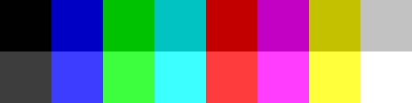
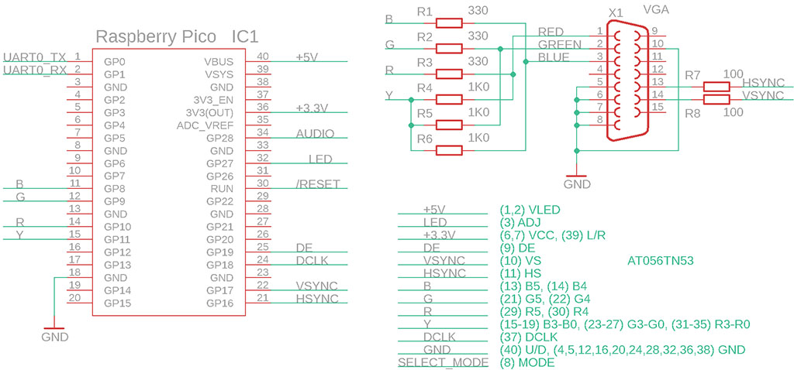
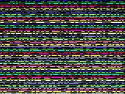
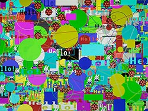
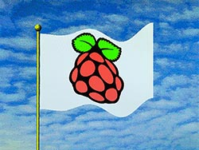
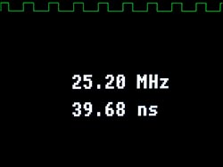
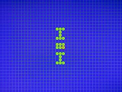
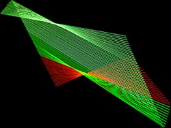
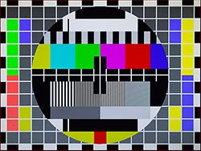
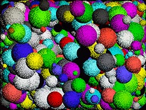

Èesky:
|
Pico16VGA
- 16-barevnı VGA displej na Raspberry Pico
pro analogovı VGA monitor a digitální LCD panel
verze 1.0, prosinec 2021
(c) Miroslav Nìmeèek
Pico16VGA na Github: https://github.com/Panda381/Pico16VGA
Obsah
Pico16VGA je minimalistická knihovna pro Raspberry Pico, generující VGA signál 640x480/16-barev pro analogovı monitor VGA nebo LCD panel s digitálním paralelním interfacem. Pico16VGA je zjednodušenou verzí plné verze knihovny PicoVGA, se sníenım poètem vıstupních pinù. Je urèena pøedevším pro technické pouití.
Barvy generované knihovnou:

Zobrazení na LCD panelu s digitálním paralelním interfacem:
Vıstup barevného signálu zajišují 4 vıstupní piny s vıznamem: modrá, zelená, èervená a jasová sloka. Knihovna podporuje 3 poøadí vıstupních pinù: RGB, BGR nebo GRB. Uvedenı pøíklad zapojení je uzpùsoben zapojení testovací desky Pimoroni Pico VGA, kterou lze pouít k základnímu vyzkoušení knihovny - na pøipojeném VGA monitoru bude vidìt obraz a z levého zvukového PWM kanálu bude slyšet zvuk, ovšem obraz bude jen jednobarevnı, zelenı.
Pøi vıstupu na analogovı VGA monitor jsou vıstupy pøipojeny pøes rezistory 330 ohmù. Jasová sloka je k vıstupním signálùm pøipojena pøes rezistory 1k0 a zajišuje pøiètení základní jasové úrovnì ke všem barevnım slokám. Spolu se vstupní impedancí monitoru 75 ohmù se zajistí potøebné vıstupní napìtí 0,7V. Vıstupní napìtí se mìní ve 4 stupních: 0% (0V), 24% (0,18V), 76% (0,56V) a 100% (0,74V). Synchronizaèní signály HSYNC a VSYNC jsou pøivedeny na VGA konektor pøes rezistory 100 ohmù. Je moné zvolit reim synchronizaèní smìsi, kdy je aktivní pouze vıstup HSYNC (ve vıznamu signálu CSYNC), VSYNC není vyuit. Tento reim nìkteré starší VGA monitory nepodporují.
Knihovna podporuje digitální paralelní vıstup na LCD panel s rozhraním R6G6B6. Ve schématu je uveden pøíklad zapojení pro displej AT056TN53. Barevné vıstupy jsou pøivedeny na vyšší 2 bity barevnıch sloek (R5+R4, G5+G4, B5+B4). Jasovı vıstup ovládá niší 4 bity všech barevnıch sloek a tím zajistí ovládání zvıšeného jasu barev. Kromì barevnıch signálù jsou na displej pøivedeny synchronizaèní signály HSYNC a VSYNC, a také øídicí signál DE a hodinovı signál DCLK.
Digitální displej mùe pracovat buï v reimu HV, kdy se uplatní signály HSYNC a VSYNC, nebo v reimu DE, kdy se uplatòuje øídicí signál DE, zajišující øízení synchronizace. Kromì tìchto signálù je generován ještì hodinovı signál DCLK. Hodinovı signál má frekvenci 25,2 MHz. Nábìná hrana hodinového signálu probíhá uprostøed kadého pixelu a zajistí tak pøepis hodnoty pixelu do registrù displeje.
Vıstupní barevné signály mohou bıt umístìny na kterıchkoliv pinech modulu Raspberry Pico. Je nutno ovšem dodret podmínku, e GPIO musí tvoøit spojitou posloupnost. V konfiguraci knihovny lze zvolit poèáteèní GPIO pro první barevnı signál, ostatní 3 signály musí následovat na následujících GPIO. Knihovna pøímo neurèuje, která barva bude pøiøazena ke kterému pinu. V konfiguraci knihovny lze sice zvolit poøadí barev RGB, BGR nebo GRB, ale to pouze urèuje pøeddefinované konstanty jmen barev a èinnost funkce pro slouèení RGB sloek. To lze snadno zmìnit podle potøeby.
Pro øídicí signály HSYNC, VSYNC, DE a DCLK platí podobné podmínky jako pro barevné signály - signály lze umístit na kterékoliv GPIO, ale GPIO musí tvoøit spojitou posloupnost.
V konfiguraci knihovny lze zvolit 5 reimù provozu, podle zpùsobu pøipojení displeje. To ovlivòuje, které øídicí signály budou pouity. Piny nepouitıch øídicích signálù lze vyuít k jinım úèelùm. Pøehled pouitıch øídicích signálù je uveden zde v tabulce:
| mód | urèen pro |
pouité signály |
| 0 | novı analogovı VGA monitor | HSYNC |
| 1 | starı analogovı VGA monitor | HSYNC, VSYNC |
| 2 | analogovı VGA monitor + digitální LCD panel | HSYNC, VSYNC, DCLK, DE |
| 3 | digitální LCD panel v HV módu | HSYNC, VSYNC, DCLK |
| 4 | digitální LCD panel v DE módu | DCLK, DE |
Jako pomocnı signál je do digitálního displeje veden ještì signál LED, kterı pomocí PWM regulace (s frekvencí 300 Hz) øídí jas LED podsvícení displeje. Funkce je volitelná v konfiguraci.
Signál AUDIO je PWM zvukovı vıstup, za kterım by mìla následovat dolní propust k filtraci modulaèní sloky. Funkce je volitelná v konfiguraci.
K pinùm GPIO0 a GPIO1 lze pøipojit debug UART konzoli. Lze vyuít pøevodník pøevádìjící úrovnì 3,3V na USB interface. UART konzole je vyuívána v nìkterıch ukázkovıch programech k ovládání klávesnicí. Mùe bıt té nahrazena USB interfacem, s vyuitím programovacího USB konektoru a konzolového programu (begPutty).

Knihovna je pøipravena k pøekladu v prostøedí Windows. K pøekladu vyaduje pouze instalaci pøekladaèe GCC-ARM (instalaèní soubor gcc-arm-none-eabi-10-2020 ). Nainstalujete-li pøekladaè do sloky C:\ARM10, staèí knihovnu rozbalit do pracovní sloky a spustit pøeklad. K pøekladu slouí povelové soubory c.bat. Soubory d.bat slouí k proèištìní od prozatimních pøekladovıch souborù. K odeslání pøeloeného programu na Pico slouí soubor e.bat - pro tento úèel se doporuèuje zvolit pro Pico disk R:.
Konfiguraèní soubor knihovny naleznete ve sloce _vga, soubor config.h. Pro vìtšinu pouití postaèí základní konfiguraèní parametry, oznaèené "base configuration".
VGA_MODE - urèuje mód provozu a pøipojenı typ displeje. Jednotlivé módy byly uvedeny v tabulce u Schématu zapojení: 0=starı analogovı VGA monitor, 1=novı analogovı VGA monitor, 2=univerzální mód (analogovı VGA i digitální LCD), 3=digitální LCD panel v HV módu, 4=digitální LCD panel v DE módu. Pokud zmìníte vybranı mód displeje, je nutné ještì v souboru vga.pio odkomentovat pøíslušnou sekci pro definici side-set pinù.
VGA_SHIFTX - horizontální posun obrazu v rozsahu -12 a +12 pixelù.
VGA_SHIFTY - vertikální posun obrazu v rozsahu -9 a +9 linek.
COLOR_FORMAT - volba barevného formátu RGB, BGR nebo GRB. Parametr urèuje poøadí barev na vıstupních pinech. Parametr urèuje pouze pøeddefinované konstanty barev COL_* a funkci pro slouèení barev COLRGB. Parametr neovlivní poøadí barev v obrázcích - pøi jejich importu je nutné pouít pøíslušnı soubor s definicí palet ve slokách _vga\_exe a _vga_\exe_\Pico16VGA_pal.
VGA_GPIO_FIRST - první GPIO pin pro signály barev. Lze zvolit kterıkoliv GPIO pin, ale všechny pouité piny musí tvoøit spojitou posloupnost.
Následující 4 parametry definují GPIO s øídicími signály. Nepouité piny není tøeba konfigurovat. Pouité piny mohou bıt umístìny na kterékoliv GPIO, ale musí tvoøit spojitou posloupnost a jejich poøadí nelze zmìnit.
VGA_CTRL_HSYNC - GPIO pin
se signálem HSYNC
VGA_CTRL_VSYNC - GPIO pin se signálem VSYNC
VGA_CTRL_DCLK - GPIO pin se signálem DCLK
VGA_CTRL_DE - GPIO pin se signálem DE.
USE_PWMLED - 1 povolí pouití PWM regulace LED podsvícení digitálního displeje.
PWMLED_GPIO - èíslo GPIO s PWM LED vıstupem.
USE_PWMSOUND - 1 povolí pouití PWM zvukového vıstupu.
PWMSND_GPIO - èíslo GPIO s PWM zvukovım vıstupem.
Sloka _boot2 obsahuje 2. stupeò loaderu, kterı se pøipojuje k pøekládanım programùm.
Sloka _exe obsahuje program elf2uf2.exe, kterı zkonvertuje pøeloenı program z elf formátu do uf2 (formát potøebnı k zavedení do Pico).
Sloka _sdk obsahuje soubory SDK knihovny Pico.
Sloka _tinyusb obsahuje USB podporu, slouící napø. k vıstupu debug textù na USB konzoli.
Programy v _tools jsou pomocné programy pouívané bìhem pøekladu.
Ve sloce _vga je kód knihovny Pico16VGA. Ve sloce _vga\_exe naleznete pomocné programy knihovny - generátor palet pro import obrázkù (spolu s vygenerovanımi soubory palet), konvertor pro import obrázkù do programu, generátor pro nastavení PLL hodin a konvertor pro import zvukù do programu.
Dále ve slokách knihovny naleznete ukázkové programy, které nejlépe ozøejmí pouití knihovny. Program pøeloíte souborem c.bat, souborem e.bat program nahrajete do Pico a souborem d.bat sloku vyèistíte. Do souboru Makefile mùete doplnit pøípadné další pøekládané soubory do parametrù ASRC, CSRC a SRC.
V souboru Makefile naleznete té parametry "stdio output" urèující vıstup na debug konzoli. Mùete zvolit buï vıstup na UART (napø. pøes UART adaptér) nebo vıstup na USB programovací konektor (virtuální COM port). Pøes konzoli mùete ovládat program pomocí klávesnice. Pouijete-li konzoli, doplòte na zaèátek main() funkce pøíkaz stdio_init_all() pro inicializaci konzolového vıstupu.
Knihovna obsahuje obrazovı buffer FrameBuf o velikosti FRAMESIZE (= 153600 bajtù), kterı je knihovnou zobrazován. Obraz má rozmìr WIDTH = 640 a HEIGHT = 480. Kadı pixel je v bufferu zastoupen 4 bity dat. V kadém bajtu obrazového bufferu jsou 2 pixely. Vyšší 4 bity bit4..bit7 obsahují první pixel (sudı), niší 4 bity b0..b3 obsahují druhı pixel (lichı). Kromì pøímého pøístupu mùete k pøístupu do obrazového bufferu pouít funkce grafické knihovny draw.cpp.
Obsluha zobrazení probíhá v druhém jádru procesoru. Pro správné zobrazení je nutné, aby druhé jádro procesoru nebylo zatíeno funkcemi pro pøerušení. Obsluhy pøerušení proto umísujte do hlavního, prvního jádra procesoru. Budete-li chtít vyuívat pro program i druhé jádro procesoru, slouí k tomu funkce Core1Exec (viz _vga\vga.h). Pøíklad pouití druhého jádra naleznete v ukázkovém programu Mandelbrot.
Kromì hlavního jádra obsahuje Pico16VGA knihovna i další podpùrné funkce. Pøípadné programy a utility jsou ve Windows EXE formátu.
draw - je knihovna pro kreslení do obrazového bufferu. Knihovna obsahuje funkce pro kreslení obdélníku, rámu, kruhu, krunice, textù a obrázkù. Knihovna obsahuje podporu pro kreslení do bufferu na pozadí, co umoòuje kreslení na obrazovku bez problikávání grafiky. Hlavní obrazovı buffer FrameBuf zabírá 153 KB pamìti RAM a nezbylo by dostatek místa pro druhı vykreslovací buffer. To je v knihovnì vyøešeno pouíváním vykreslovacích pásù. V programu se rezervuje vykreslovací buffer o velikosti napø. poloviny hlavního obrazového bufferu FRAMESIZE/2 (= 76800 bajtù), kterı u se do 264 KB pamìti RAM vejde. Ukazatel pDrawBuf se nastaví na adresu vykreslovacího bufferu, DrawBufH bude obsahovat vıšku vykreslovacího bufferu (zde HEIGHT/2 = 240). Vykreslení na obrazovku se poté provede ve dvou krocích - poèátek bufferu DrawBufY se nastaví na 0, provede se vykreslení celého obrazu pomocí vykreslovacích funkcí a funkcí DrawBufUpdate() se obsah vykreslovacího bufferu pøenese do hlavního obrazového bufferu. Ukazatel DrawBufY se posune na souøadnici HEIGHT/2 a opìt se provede vykresleního stejného celého obrazu. Vykreslovací funkce oøeou vykreslovanı obsah. Tímto zpùsobem lze vykreslovat obraz bez blikání postupnì, po jednotlivıch pásech. Metoda je pouita v ukázkovém programu Balloons.
pwmled - øízení jasu PWM LED podsvícení digitálního displeje.
pwmsnd - zvukovı vıstup. Knihovna aktivuje PWM generátor na pøíslušném vıstupním pinu. K pinu lze (pøes RC filtr) pøipojit sluchátka nebo externí zesilovaè. Zvukovı soubor má formát PCM 22050 Hz, mono, 8 bitù unsigned. Je moné jak jednorázové pøehrátí zvuku, tak i opakované pøehrávání s promìnlivou rychlostí.
rand - generátor náhodného èísla. Knihovna generuje náhodná èísla s 32-bitovım seed, s rùznou velikostí vıstupních dat a ve volitelnıch rozsazích.
Programy jsou pøipravené pro ovládání klávesnicí pøes konzoli PC. Jako konzoli lze pouít program begPutty a virtuální sériovı USB port. Nìkteré programy pouívají zvuk - generování PWM zvuku pøes pin GP28 (program oznaèen poznámkou "(zvuk)").
|  | Analyzer - jednoduchı jednokanálovı logickı analyzátor se vzorkovacím kmitoètem 126 MHz (vstup GPIO15, Pico pin 20). Obsahuje té generátor náhodného šumu (jako testovací vzorek, vıstup GPIO14, Pico pin 19), nastavitelnı a do vzorkovacího kmitoètu 126 MHz (v pøíkladu nastaveno na 15,75 MHz). |
| Balloons - demonstrace kreslení do back bufferu, poletující balonky. | |
|  | Draw - demonstrace kreslení grafickıch prvkù. Pro ukázku se støídá pomalé vykreslování a kreslení maximální rychlostí. |
 |
Earth - rotující zemìkoule. Softwarová sférická transformace obrázku. |
 |
Eggs - logická hra (zvuk). Vychází ze hry Reversi. Cílem je získat co nejvíce vlastních kamenù. Jeden hráè mìní kameny ve smìru slepice-kuøe-vejce, druhı hráè opaènım smìrem. Ovládání: L vpravo, I nahoru, J vlevo, K dolù, H pomoc, Q konec, P 2 hráèi, D demo, mezerník poloení kamene, Enter ok. Lze hrát proti jinému hráèi i proti poèítaèi. |
 |
Fifteen - logická hra (zvuk). Cílem je seøadit kameny v poøadí 1 a 15. Ovládání: L vpravo, I nahoru, J vlevo, K dolù, Q nová hra. |
|  | Flag - vlající vlajka. |
|  | Frequency Meter - mìøiè frekvence a periody digitálního signálu s pøesností 4 èíslice, v rozsahu 2,5 Hz a 63 MHz, se zobrazením vzorku prùbìhu signálu. Vstup GPIO15, Pico pin 20. Mìøiè automaticky kombinuje dvì metody mìøení - mìøení frekvence a mìøení periody signálu. |
 |
Hello World - nejjednodušší ukázkovı pøíklad pouití knihovny Pico16VGA. |
|  | Life - simulátor ivota bunìk (celulární automat). Buòky se v kadém kroku mìní podle poètu sousedních bunìk: pro 1 a ménì buòka zaniká na osamocení, pro 4 a více buòka zaniká na pøemnoení, pro 3 vznikne nová buòka, pro 2 není zmìna. Ve høe se lze pøepínat mezi 10 obrazovkami (sloty) a pøenášet obraz mezi nimi pomocí schránky. V kadém slotu je pøedpøipravena definice populárních kombinací. Ovládání: L vpravo, I nahoru, J vlevo, K dolù, C kopie do schránky, V vloení ze schránky, D vymazání plochy, mezerník zmìna buòky, Enter start/stop automatu, 0-9 vıbìr slotu. |
|  | Lines - generátor èárovıch relaxaèních obrazcù. |
 |
Mandelbrot - generátor fraktálovıch obrazcù Mandelbrotovy mnoiny. Ke generování je pouita integer matematika a díky tomu je pøekreslení obrazce rychlé. Je však nutno poèítat s tím, e pøi zvìtšování mìøítka zobrazení je potøebná rostoucí pøesnost poètu èíslic. Pouitá integer a float matematika vystaèí do mìøítka zvìtšení 10^5, double matematika do mìøítka 10^10. Pøi dalším zvìtšování se namísto obrazce zobrazí u jen barevné èáry. Ovládání: E nahoru, S vlevo, D vpravo, X dolù, Q zvìtšení mìøítka, A zmenšení mìøítka, I pøepnutí na celoèíselnou matematiku (nejrychlejší, dosah do 10^-5), F pøepnutí na float matematiku (pomalejší, dosah do 10^-5), B pøepnutí na double matematiku (pomalá, dosah do 10^-10), O sníení poètu krokù iterací, P zvıšení poètu krokù iterací, mezera pøekreslení obrazovky. |
 |
Matrix Rain - simulace "matrixového kódového deštì". |
 |
Maze - cílem je najít cestu z bludištì. Bludištì jsou generována náhodnì programovì. Ovládání: J vlevo, I nahoru, L vpravo, K dolù, H pomoc (ukázání dveøí). |
|  | Monoscope - test displeje, zobrazí monoskop. |
 |
Pi - vıpoèet èísla Pi na 4780 èíslic. Po vıpoètu je vısledek zkontrolován s oèekávanım vzorkem. |
| Pixels - náhodné generování barevnıch pixelù. | |
 |
Raytrace - generování 3D obrazce metodou ray tracing. Vzhledem k omezené barevné hloubce Pico16VGA je pøi zobrazení pouit rastrovı dithering ("zrnitost" obrázku). |
 |
RGBtest - test barev. |
|  | Spheres - náhodné generování koulí. |
 |
Spots - náhodné generování skvrn. |
 |
Twister - zkroucení texturovaného kvádru. Slouí jako ukázka programové deformace obrázku. |
| Water Surface - simulace vlnící se vodní hladiny (zvuk). |
Autor: Miroslav Nìmeèek, http://panda38.sweb.cz
{kind=link}
{kind=link}
{kind=link}
{kind=link}
{kind=link}
{kind=link}
{kind=link}
{kind=link}
{kind=link}
{kind=link}
{kind=link}
{kind=link}